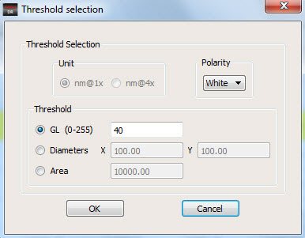

To perform contact
measurement analysis, you have to set one of three properties: GL
(0-255), Diameters of the contact, or Area of the contact.
Procedure
- In the Calibre DefectReview
window, click Settings > Set Contact
Measurement Properties. The Threshold Selection dialog box
appears.
Figure 1. Threshold Selection
- Select one of the following
properties to set:
- Once one of the properties
are set, you may want to change the polarity of the contact for
the analysis. The polarity can either be white or black. To modify
the polarity, select the value from the Polarity drop-down
list.